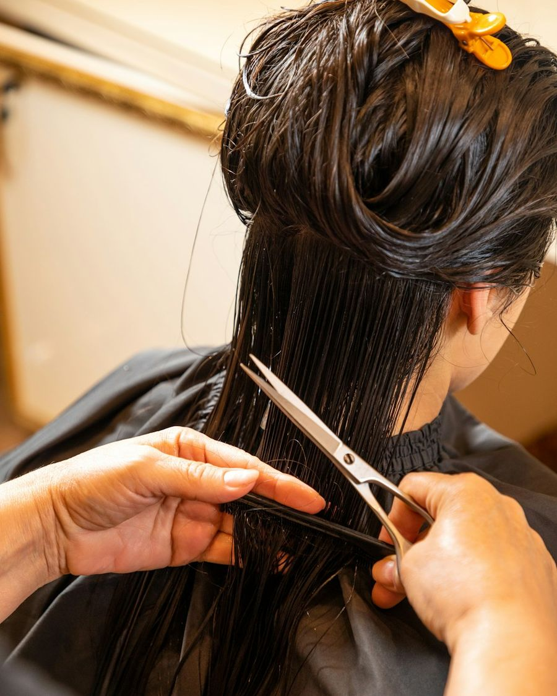

Haircuts
Precision cuts for every length and texture. We cut wet when a line needs to be exact, and dry when curls, waves and texture need to be seen as they really fall.
Always included
- Consultation and hair-history check
- Shampoo with scalp massage
- A finish you can repeat at home
On the menu
- Women's cut & style
- Short cut & style
- Curly dry cut
- Men's scissor cut
- Bang & neckline trims
- Kids' cuts